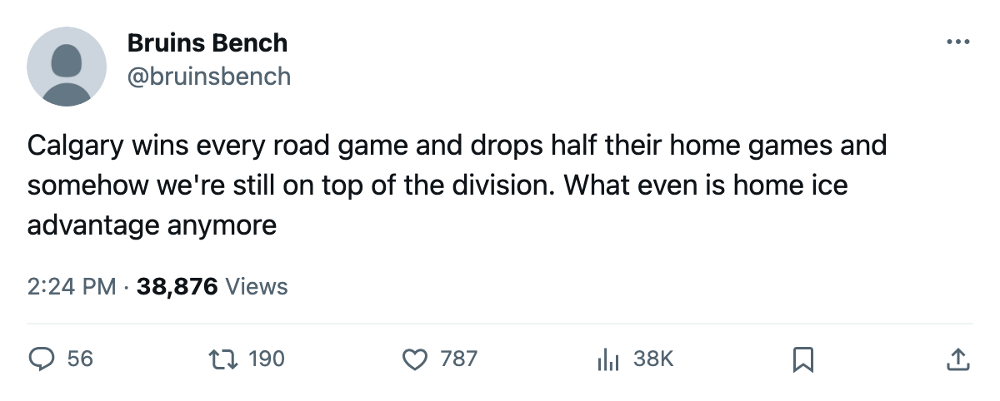

Numbers Game: Calgary and Dallas Are 4-0-0 on the Road, 1-2-0 at Home, and They Meet in Calgary Tonight
Two clubs, identical splits, 10 points each, and one 1-2-0 record changes by the end of the night
 Ray CallumSenior correspondent · Home Ice Network
Ray CallumSenior correspondent · Home Ice Network
Both  Calgary Flames and
Calgary Flames and  Dallas Stars are 4-0-0 on the road and 1-2-0 at home through 7 games, 10 points, with 8 of them earned away from their own building. They meet tonight in Calgary, and one of those 1-2-0 records changes.
Dallas Stars are 4-0-0 on the road and 1-2-0 at home through 7 games, 10 points, with 8 of them earned away from their own building. They meet tonight in Calgary, and one of those 1-2-0 records changes.
Calgary Flames has scored 25 goals in 7 games, the most in the Northwest Division, and leads that division by 2 points over  Colorado Avalanche. Dallas Stars tops the Pacific by 2 points over
Colorado Avalanche. Dallas Stars tops the Pacific by 2 points over  Mighty Ducks of Anaheim and has allowed 13 goals, the fewest in that division. Calgary carries a 2-goal scoring margin across its first 7 games; Dallas has a 4-goal margin.
Mighty Ducks of Anaheim and has allowed 13 goals, the fewest in that division. Calgary carries a 2-goal scoring margin across its first 7 games; Dallas has a 4-goal margin.
 Roman Turek83 has made 6 of Calgary's 7 starts, with
Roman Turek83 has made 6 of Calgary's 7 starts, with  Jamie McLennan80 backing up in 1.
Jamie McLennan80 backing up in 1.  Marty Turco97 has started all 7 for Dallas, the only goaltender to play in a game for the club this season.
Marty Turco97 has started all 7 for Dallas, the only goaltender to play in a game for the club this season.
Dallas Stars plays 3 of its next 4 games on the road: at Calgary tonight, at  Vancouver Canucks on October 26, at
Vancouver Canucks on October 26, at  Edmonton Oilers on October 28, then home against
Edmonton Oilers on October 28, then home against  Florida Panthers on October 30. Calgary Flames plays 3 of 4 at home: tonight,
Florida Panthers on October 30. Calgary Flames plays 3 of 4 at home: tonight,  San Jose Sharks on October 26,
San Jose Sharks on October 26,  Buffalo Sabres on October 31, and at Mighty Ducks of Anaheim on October 28. If neither club breaks the pattern, Dallas finishes October 7-1-0 on the road and Calgary drops to 1-4 at home.
Buffalo Sabres on October 31, and at Mighty Ducks of Anaheim on October 28. If neither club breaks the pattern, Dallas finishes October 7-1-0 on the road and Calgary drops to 1-4 at home.
